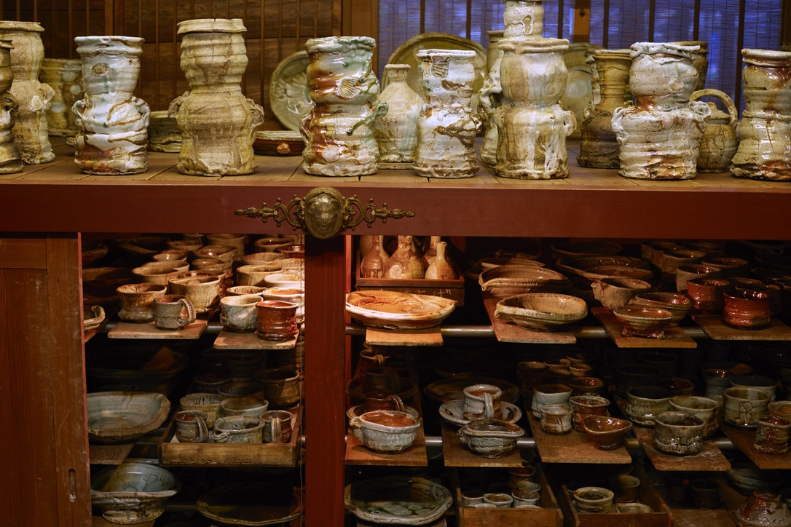
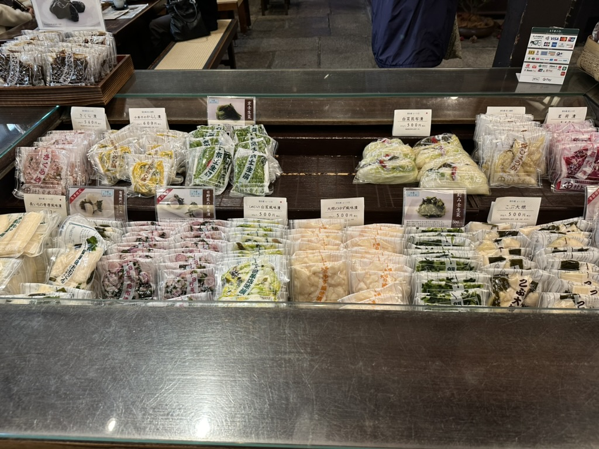
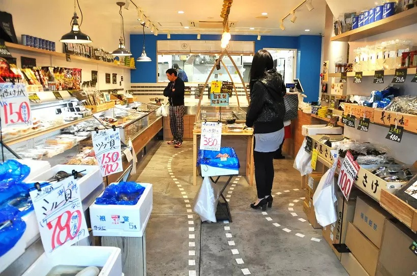
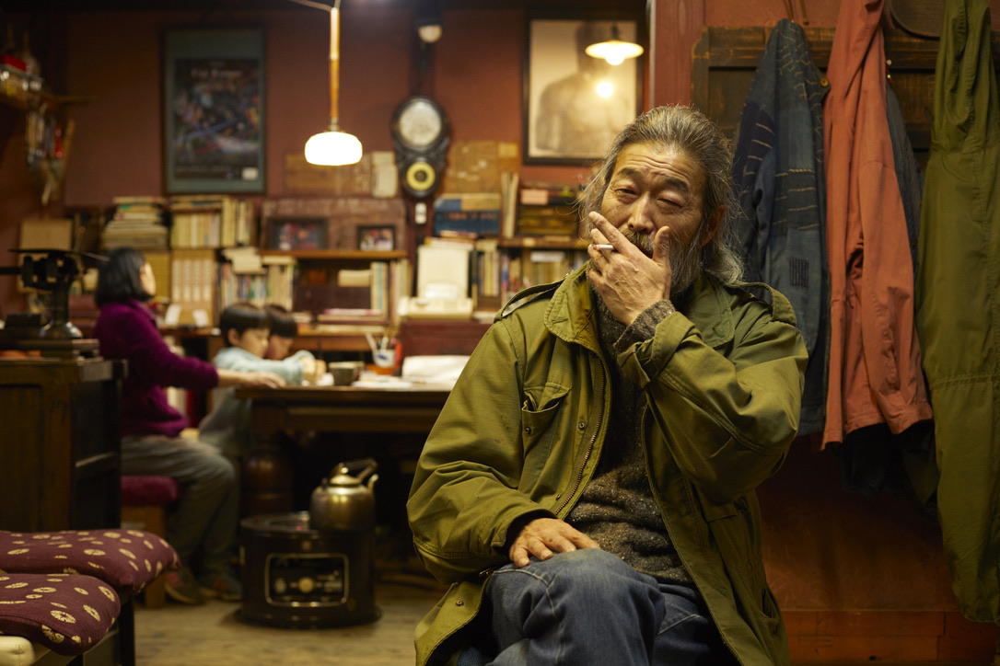

A potter in Mashiko spends six months on a single firing of guinomi cups. A knife maker in Sakai forges blades the same way his grandfather did. A fishmonger at Sakana Bacca makes his own ankimo every winter. Murakami-jū Honten in Kyoto has been pickling vegetables in the same shop since 1832.
None of these people make sake. All of them make the table sake is poured at. This is where we write about them.

Murakami-jū Honten sits in a back alley off Shijō Kawaramachi, behind a brown noren stamped with a white circle-and-cross. The shop opened in 1832 — Tenpō 3 — and built its name on senmaizuke, the winter pickle of paper-thin Shōgoin turnip slices pressed with kelp and salt. No vinegar, no sugar. The turnip does the work.

Most ankimo on most counters in Tokyo arrives pre-made, in vacuum bags, from a wholesaler. At Sakana Bacca it doesn't. The fishmonger here cures the monkfish liver himself every winter — salt, sake, steam, time. The shop is small. A blue sign out front, a white noren, two ice cases inside with hand-lettered wooden tags propped in the snapper and the mejina. The ankimo is not on display. You ask for it.

The vessels come out of the kiln rough, glazed in dragged whites and iron browns, the rims unfinished where the fire decided. Kuroemon Kumano works in Fukui, in the lineage of Echizen ware — one of the Six Ancient Kilns, the oldest stoneware tradition in Japan. His showroom is shelves and shoji. His workbench is vessels resting on yesterday's newspaper. He sits in an olive field jacket, smokes, lets you look.